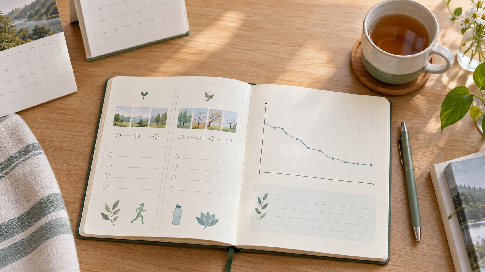

50대가 되니 예전처럼 먹고 움직여도 살이 안 빠지는데 어떻게 해야 하나요?
50대 체중 관리는 예전처럼 먹고 움직이는 것만으로는 쉽지 않을 수 있습니다.
그래서 먼저 과식과 스트레스성 식습관부터 차분히 돌아보시는 게 좋습니다.
사례자 A는 약 6개월 동안 총 10kg을 감량한 기록을 남겼습니다.
체중 숫자만 서둘러 바꾸기보다 식습관과 장 건강을 함께 살펴보시고, 달라지는 점을 꾸준히 기록해 보세요.
이 글에 나오는 3개월과 6개월은 한 사례의 기록입니다.
같은 숫자를 목표로 삼기보다, 내 식습관과 컨디션이 어떻게 달라지는지 살펴보시면 됩니다.
50대가 되니 예전처럼 먹고 움직여도 살이 안 빠지는데 어떻게 해야 하나요?
이런 고민이 있다고 해서 의지가 부족한 것은 아닙니다.
식사와 스트레스, 활동량은 달라졌는데 관리 방법은 예전 그대로일 때가 많습니다.
그러니 처음부터 더 엄격하게 제한하기보다, 내가 언제 과식하는지와 평소 식습관부터 확인해 보세요.
사례자 A는 무엇을 바꿨나요?
『아프고 나서야 알게 된 것들』 61~63쪽에는 사례자 A의 경험이 기록되어 있습니다.
사례자 A는 50대 여성으로, 20대 후반부터 운동 부족과 스트레스성 과식을 반복했다고 합니다.
50대에는 당뇨병과 고지혈증 진단을 받아 약을 복용했다고 기록되어 있습니다.
이후 자담인 제품과 장청 프로그램을 꾸준히 섭취하고, 과식과 스트레스성 식습관을 조절하는 데 집중했습니다.
책에는 구체적인 식사 시간, 수면 시간, 운동량은 기록되어 있지 않습니다.
따라서 이 사례를 운동량이나 특정 생활 시간의 효과로 해석하기는 어렵습니다.
약 3개월 후 체중 5kg 감소, 그 후 약 3개월 동안 5kg 추가 감소.
총 기간은 약 6개월이며, 총 10kg 감량과 함께 부종·무기력함이 줄고 아침에 몸이 가볍고 기운이 남았다고 기록되어 있습니다.

이 사례에서 현실적으로 참고할 점
첫째, 짧게 판단하지 않고 일정 기간 변화를 지켜봤다는 점입니다.
3개월과 6개월은 사례자 A의 기록일 뿐, 누구에게나 같은 결과가 나타나는 기간은 아닙니다.
둘째, 과식이 스트레스와 이어지는지 살펴보고 식습관을 조절했습니다.
셋째, 제품 섭취를 포함한 실천을 꾸준히 이어갔습니다. 다만 체중 변화의 원인을 한 가지로 단정할 수는 없습니다.
□ 스트레스를 받을 때 과식하는 시간대가 있으신가요
□ 배고픔과 습관적 섭취를 구분하고 있으신가요
□ 체중뿐 아니라 부종, 피로감, 아침 컨디션도 기록하고 있으신가요
□ 최소 몇 주 이상 실천할 수 있는 방법인가요
이 사례는 책에 기록된 개인 체험담입니다. 개인의 건강 상태에 따라 결과는 다를 수 있으며, 당뇨병·고지혈증 등 질환이 있다면 식단이나 제품 섭취를 바꾸기 전에 의료진과 상담해 주세요.
책에 약을 끊었다는 기록이 있더라도, 의사의 지도 없이 약을 중단하시면 안 됩니다.
기준 시점: 2026년 9월
자주 묻는 질문
- 운동을 많이 해야 체중을 줄일 수 있나요?
- 이 사례에는 구체적인 운동량이 기록되어 있지 않습니다. 현재 건강 상태에 맞는 활동을 의료진과 상의해 무리 없이 시작해 보세요.
- 3개월이면 누구나 5kg을 감량할 수 있나요?
- 아닙니다. 3개월 5kg은 사례자 A에게 기록된 결과일 뿐, 다른 분의 결과를 보장하는 기준은 아닙니다.
- 당뇨약은 체중이 줄면 끊어도 되나요?
- 임의로 중단하시면 안 됩니다. 혈당 수치와 치료 계획은 반드시 담당 의료진과 상의해 조정하셔야 합니다.
출처: 『아프고 나서야 알게 된 것들』 61~63쪽에 기록된 사례를 바탕으로 작성했습니다.